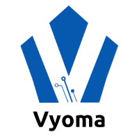
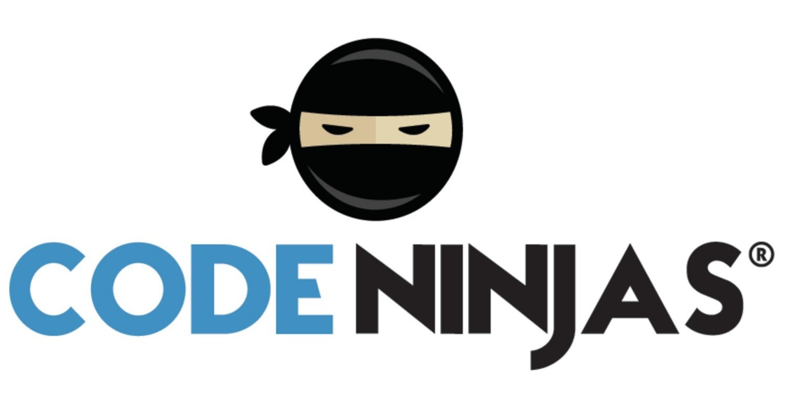

Experience
Work Experience

I am an intern at Vyoma Systems, a company providing cloud-based microchip testing solutions that offer enhanced efficiency, accessibility, and reliability compared to traditional on-premise methods. My role involves creating blogs using Hugo to share insights, updates, and content about the company's technology and services. I utilized Linux (Ubuntu) and Bash scripting to streamline development and manage version control with Git/GitLab, and used Hugo to create a blog showcasing company workflows.
Leadership
I am the Vice President of Designs at Blueprint and a designer on team Inreach. In my role as VP, I develop and facilitate onboarding workshops for new Blueprint designers, focusing on Figma training and best practices in wireframing, prototyping, and user-centered design. I direct design efforts on projects for nonprofit organizations, employing agile design processes and incorporating feedback from NPOs and team members for iterative improvements. Additionally, I curate comprehensive, well-documented resources for the design team, ensuring organized and accessible information while fostering collaboration using Wiki and Notion.
Volunteer

At Code Ninjas, I worked as a Sensei, where I instructed children aged 5-14 in foundational technology skills, covering both hardware and software components. I hosted creative and intellectual activities such as video game making through block coding projects using MakeCode Arcade and Scratch, cultivating creativity and problem-solving skills in young learners.